Little Ones
Soft woodland friends, llamas, flower fairies and boho rainbows in calm, gender-neutral tones.
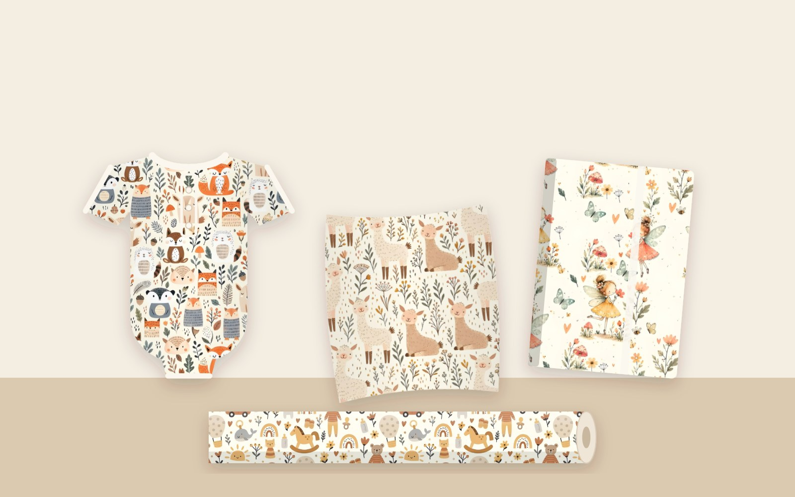
Hand-crafted repeat patterns for fabric, wallpaper, kidswear, home decor, stationery and gift wrap, ready to license and print.
Soft woodland friends, llamas, flower fairies and boho rainbows in calm, gender-neutral tones.

Forest foxes, sweet elephants, safari babies and starry whales for babywear, bedding and nurseries.
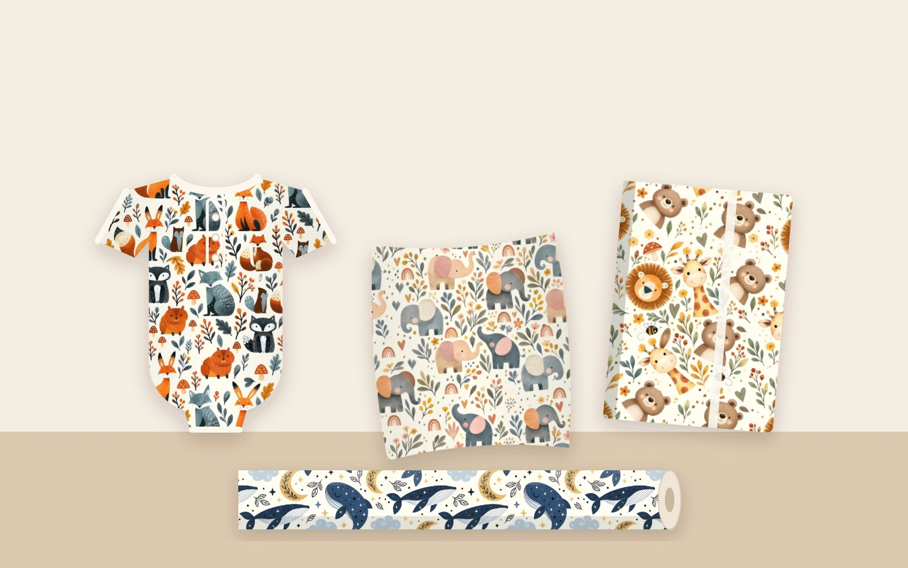
Whimsical watercolour fairies with tulips, umbrellas and hearts, for girlswear and nursery decor.
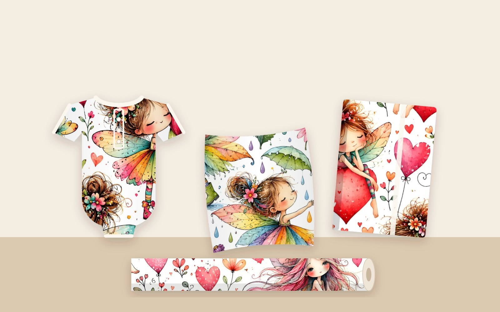
Sailor whales, ocean life and fish shoals in fresh coastal blues.
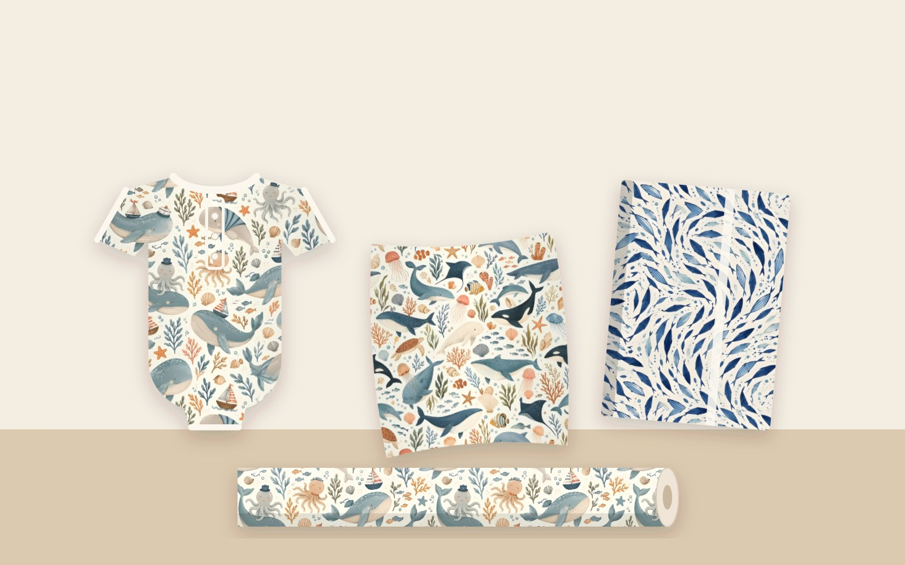
A busy and a light coordinate: folk birds, rainbows, suns and moons in warm boho tones.
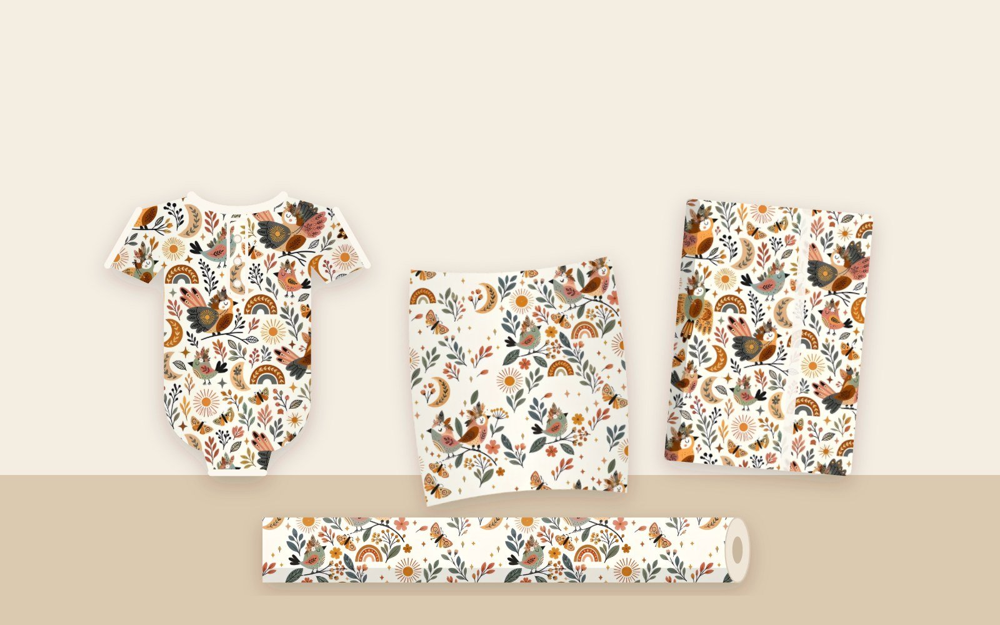
Vintage folk botanicals: moths, mushrooms, wildflowers and folk-bird damasks.
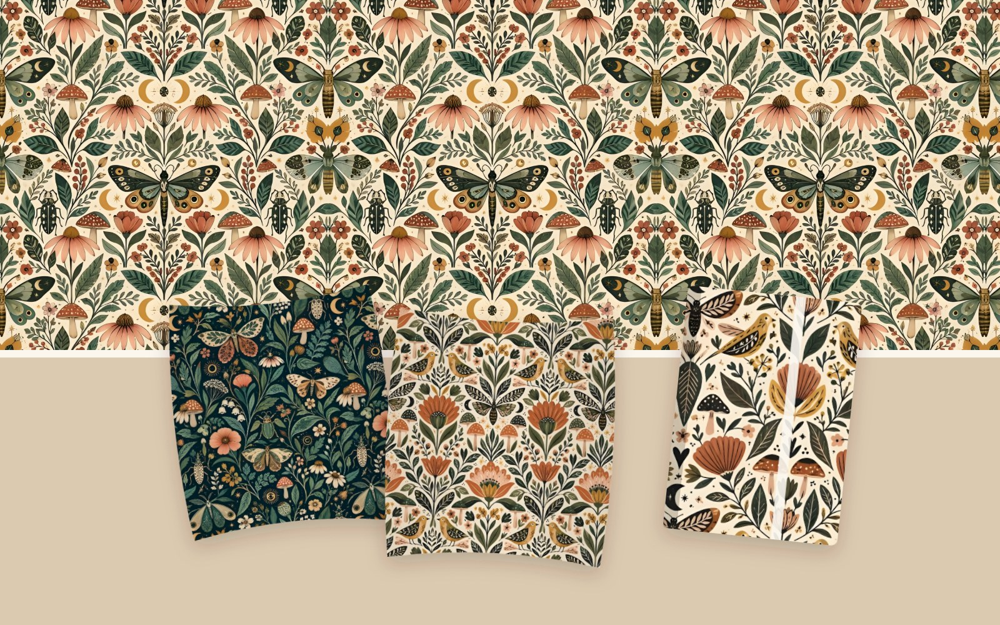
Moody moths, moons and wildflowers: a dark botanical story for walls, textiles and stationery.
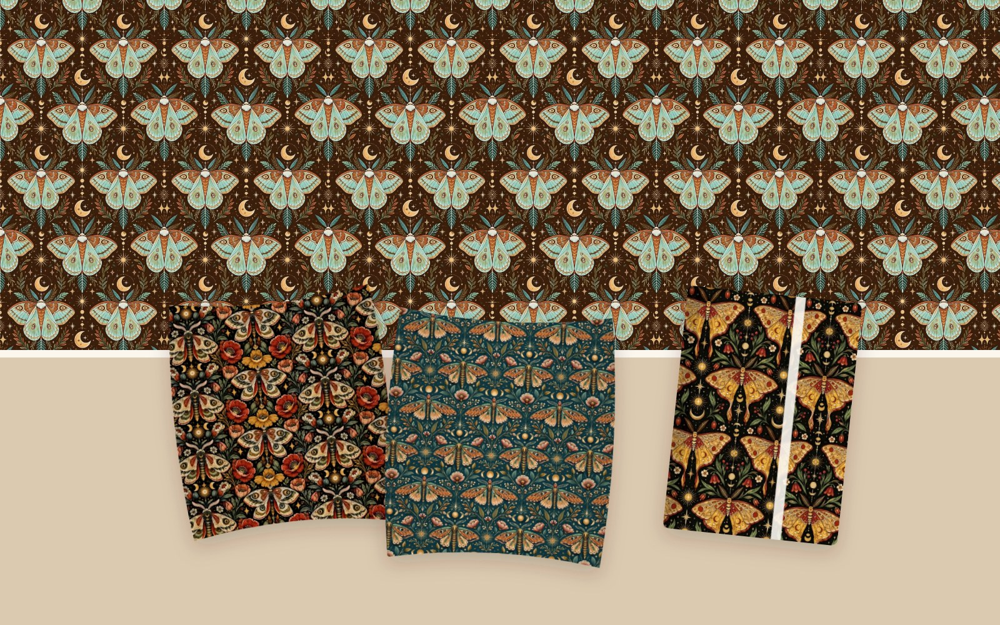
Hand-drawn mudcloth marks in three colourways: mustard, navy gold and navy cream.
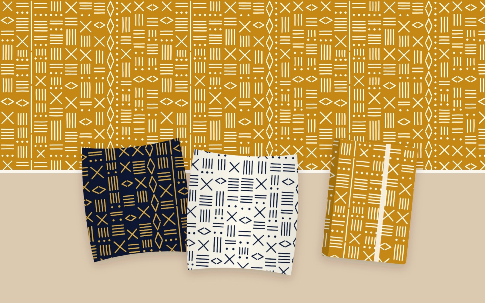
Gold crescent moons and sunburst diamonds on navy and emerald.
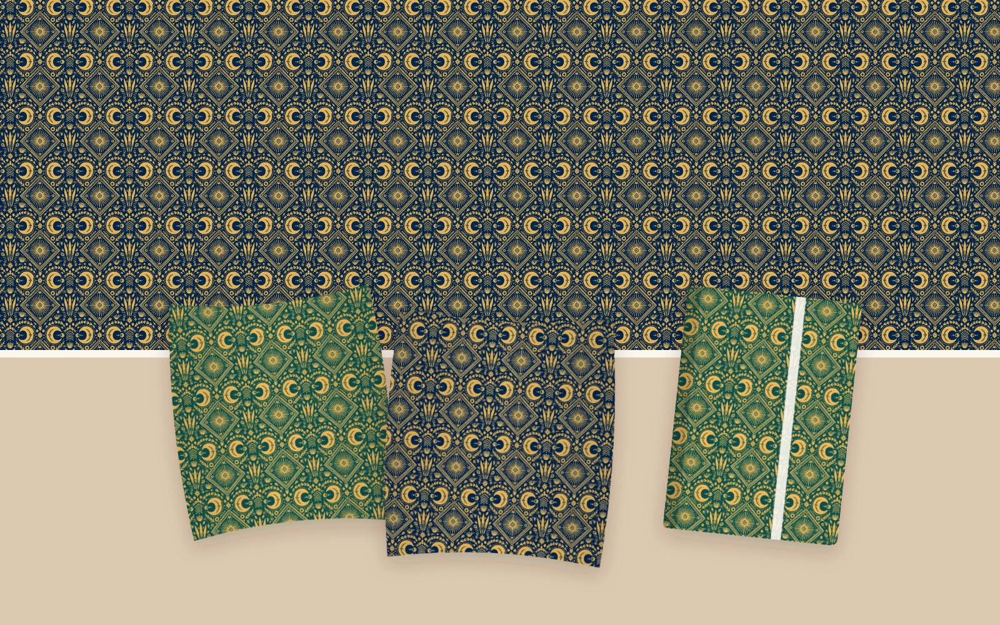
Navy and rust swallows among leaves and ferns on warm cream.
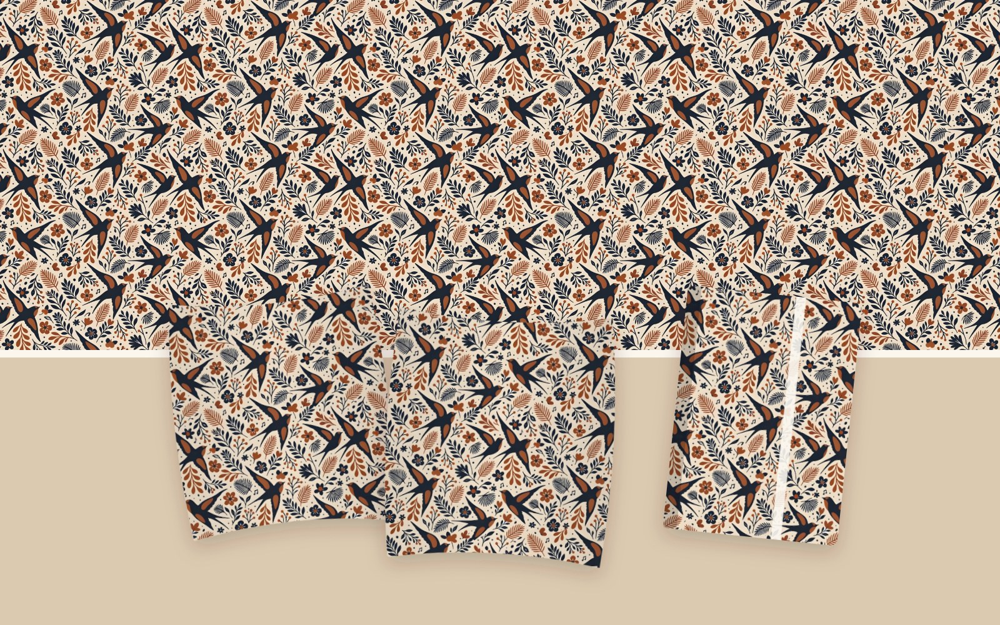
Retro botanical florals, from midnight blooms to meadow sketches.
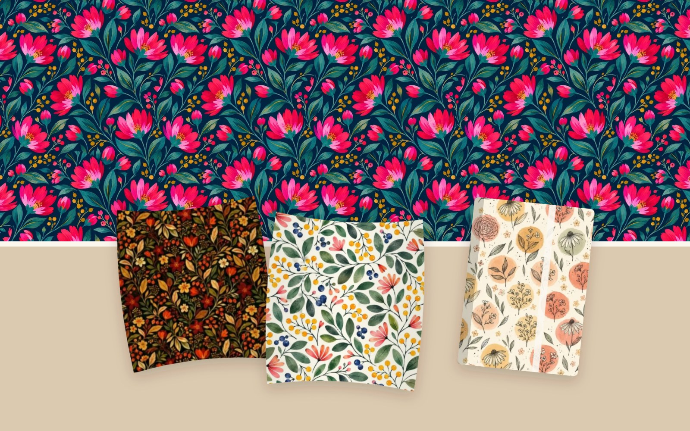
Scandi folk gnomes and fair-isle knit stars in red, green and cream.
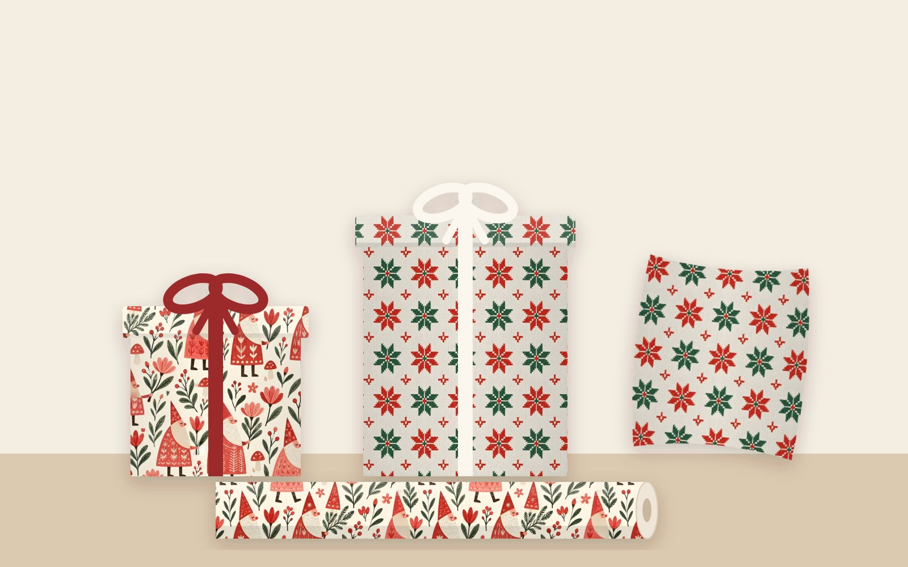
Watercolour gnome girls, robins and toadstools with a starlight reindeer coordinate.
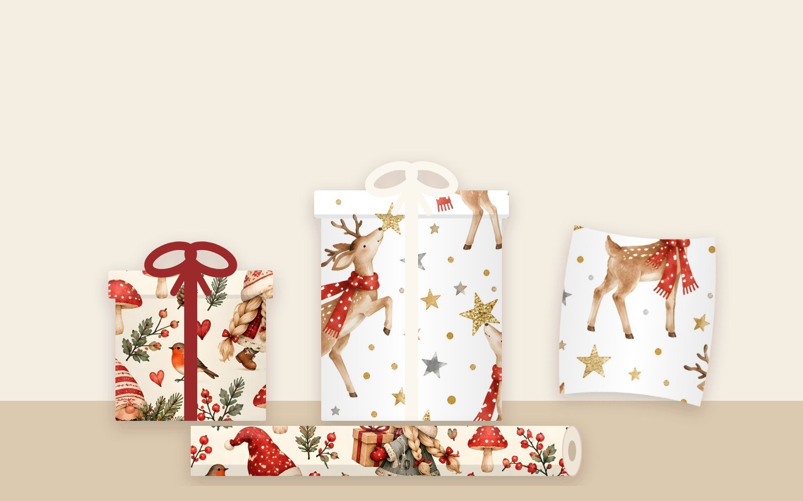
Snowy cottages, lamp posts and robins with a Nordic forest girls coordinate.
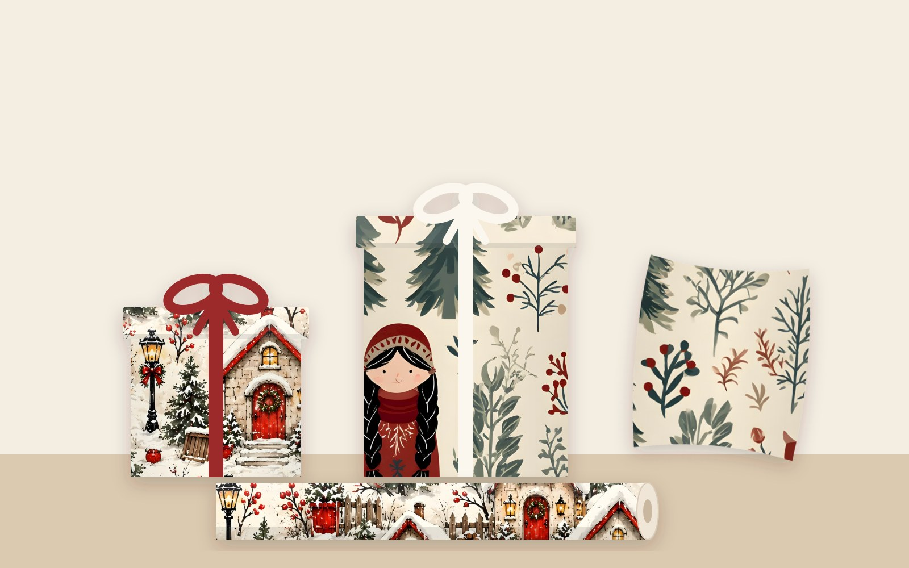
Dancing moose in tutus among holly, berries and golden stars.
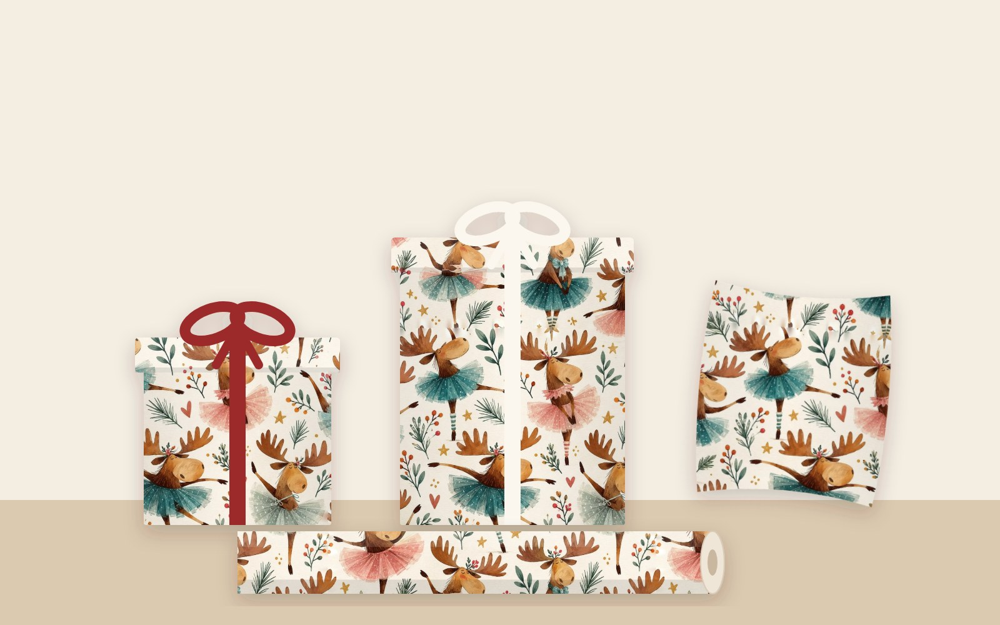
License existing designs for your product range. Every pattern is supplied as a print-ready, seamless 3600 px tile at 300 DPI.
Any design can be recoloured to match your brand palette, season or trend direction.
New exclusive collections designed for your brief, with coordinates and full repeat files.
Heather McLeod · Cape Town, South Africa
heather.mcld17@gmail.comEtsy shopDownload PDF portfolio